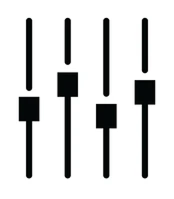

Найпопулярніший трек, записаний у нас:
Просимо до Вашої уваги відеозапис роботи нашої студії:
У студії LoudMusic ми допомагаємо Вашим ідеям перетворитися на справжні хіти
Запис вокалу та інструментів – від акустичних гітар до електронних синтезаторів.
 Мікшування треків – ми робимо звук насиченим, чистим і гармонійним.
Мастеринг – готові треки звучать ідеально на всіх платформах, від Spotify до живих концертів.
Аренда студії та обладнання – у нас сучасні кабіни та професійна апаратура для запису будь-яких жанрів.
Аудіо-продакшн для відео – від рекламних роликів до кінофільмів та YouTube-контенту.
До кожного проєкту ми підходимо творчо і персонально, щоб Ваш звук звучав унікально.
Найпопулярніший трек, записаний у нас:
Просимо до Вашої уваги відеозапис роботи нашої студії: